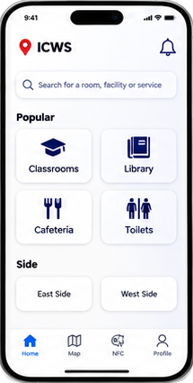
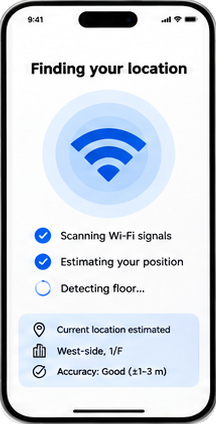
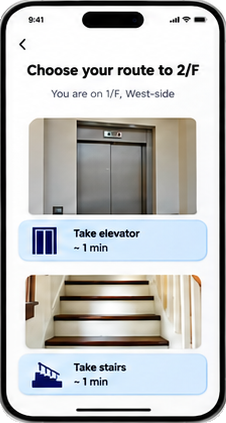
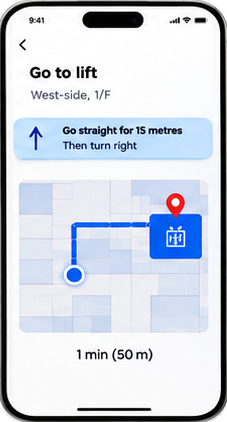
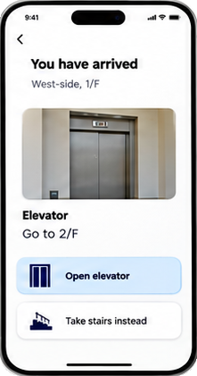
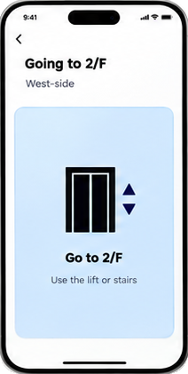
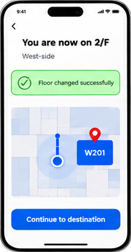
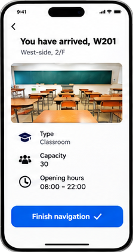

App Showcase
The route
to W201.
Follow ABC-chan from the campus entrance to a West-side classroom, one screen at a time.
Start walkthrough
Chapter 01 / Discover
Find your destination.
Search for W201. The room record supplies the building and floor.
Chapter 02 / Locate
Set your starting point.
Confirm the Wi-Fi estimate or move the marker on the indoor map.
Chapter 03 / Navigate
Move between floors.
Choose your connection, then follow ABC-chan from 1/F to 2/F.
Chapter 04 / Arrive
Reach classroom W201.
Follow the remaining turns on the second floor to the classroom door.
Route choices
One floor or two?
Screen gallery
Browse all 13 screens
Discover
- 01 Entrance Screen
Open ICWS and meet ABC-chan, the AI assistant designed to guide the journey.

02 Home ScreenSearch for a classroom, an office, a facility or a college service.
- 03 Search Results
Select W201 in the search results. Its room record identifies the West-side building and second floor automatically.
 04 Room Details
04 Room DetailsReview the classroom details, then choose Navigate to begin.


Locate

05 Detecting Current LocationThe positioning service would use campus Wi-Fi signals to estimate your building, floor and position. Confirm the suggested starting point.
 06 Manual Location Adjustment
06 Manual Location AdjustmentIf the estimate is wrong, correct your location on the indoor map. ICWS then checks whether the destination is on the same floor.

Navigate

07 Choose Lift or StairsSelect the lift or staircase. ABC-chan would calculate a route through your chosen connection.

08 Navigate to Lift or StairsFollow the directions from your confirmed location to the selected lift or staircase.

09 Arrive at Lift or StairsAt the floor connection, check the destination level before continuing.

10 Changing FloorTake your selected lift or staircase to the second floor.

11 Confirming Floor ChangeConfirm the detected floor so the next directions begin on the correct level.


Arrive
 12 Navigate to Destination
12 Navigate to DestinationFollow turn-by-turn directions on the second floor until you reach W201.

13 Arrive at DestinationReview the arrival information and room details at the end of the route.